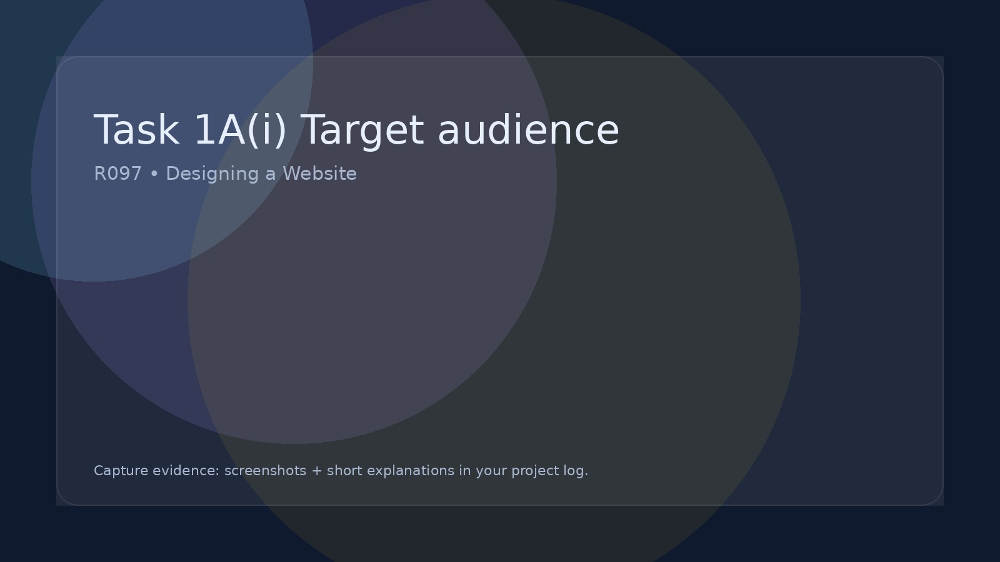

Task 1A(i) Target audience
Decide who the website is for and what will appeal to them.
Create a clear audience profile
Write like a real person
Reference the brief
Template(s): Project Log checklist
Add completed templates into your Task folder and screenshot key decisions into your log.
Avoid:
"Teenagers" / "Everyone" / "People who like websites". You must be precise.
Evidence to include in your project log
- A short audience statement: **who** the users are (age, interests, needs).
- What would appeal to them: colour/style, tone of writing, imagery, content types.
- Accessibility considerations (font size, contrast, simple navigation).
- A 3–5 bullet persona (name, age, goals, frustrations).
Strong examples (what OCR likes)
- Specific: Year 8 students (12–13) who like quick, visual information and short tasks.
- Appeals: Bright but readable colours, big buttons, lots of icons, minimal text blocks.
- Needs: Works on phones, clear navigation, pages load fast on school Wi‑Fi.
- Link back: This suits the brief because… (1–2 lines).